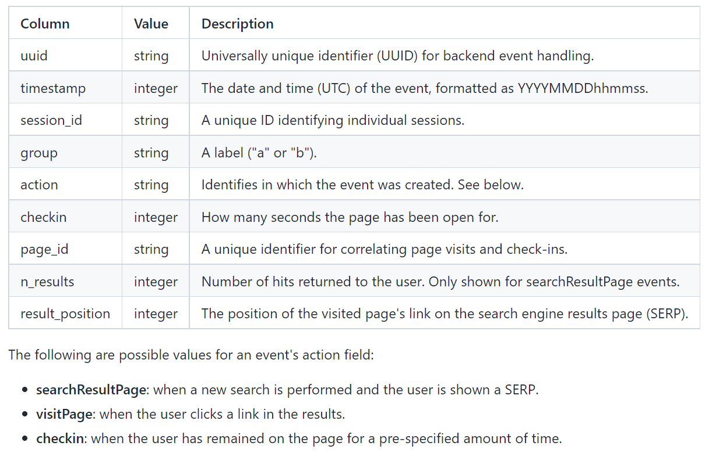
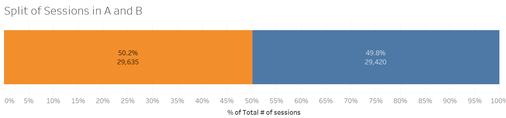
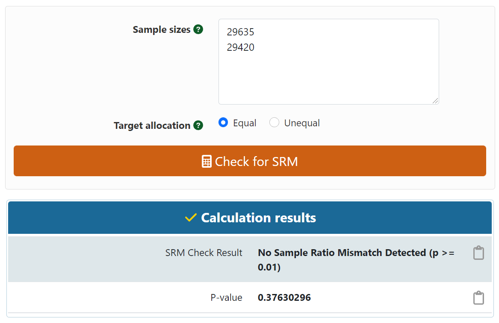
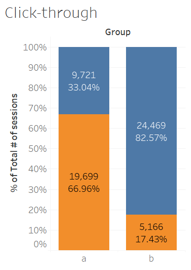
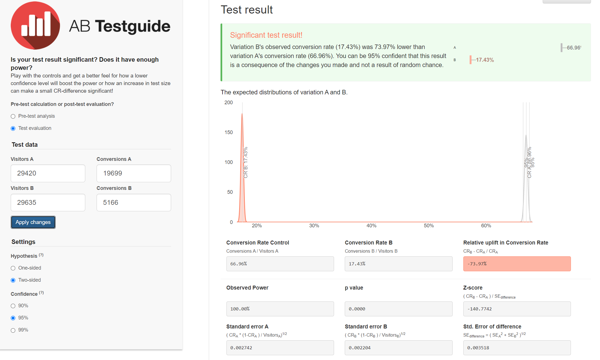
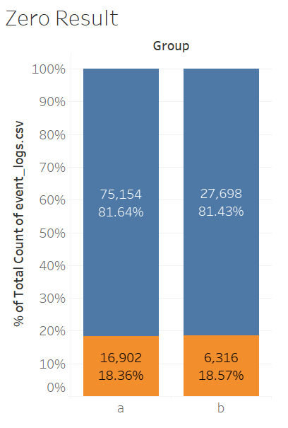
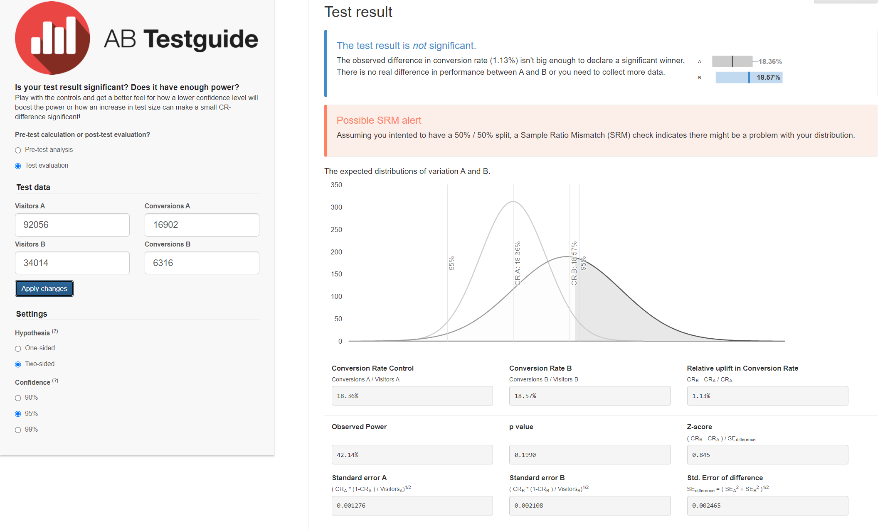
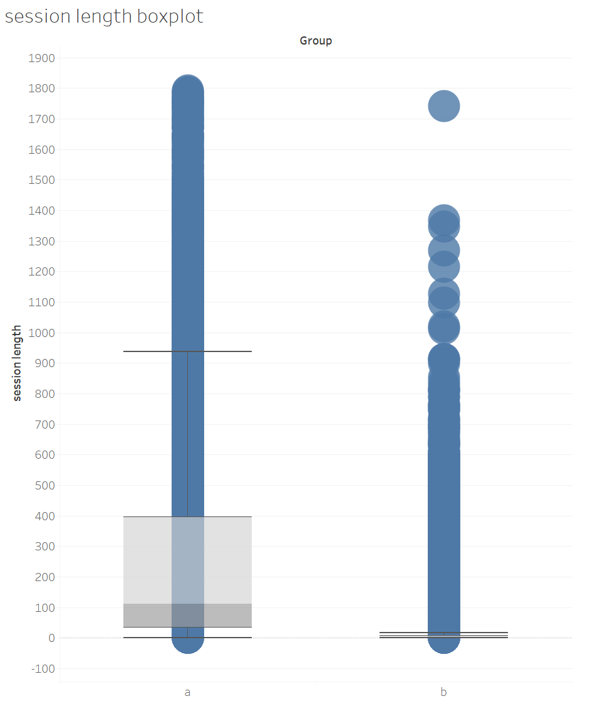

A/B testing is a very popular topic among companies. As a data scientist, there are several things that I need to check before I conduct A/B testing.
The first half is the workflow I'd go over every time. There's also an example of A/B testing in the second half
of this project.
Workflow
1. Quantitative Analysis & Qualitative Analysis
Don't run test every idea. Data scientists are not cheap. Don't waste your time
on projects that have low ROI. To evaluate the value of different ideas, conducting a
quantitative analysis using historical data to obtain the opportunity sizing of each idea is a good approach.
However, historical data only provides insights into what we've done in the past. It would be great to
conduct a qualitative analysis with focus groups and surveys. A combination of quantitative and
qualitative analysis will help you to determine what idea to test.
.
2. Test Design
We need to find out the sample size of a test, which requires three parameters.
1. Type II error rate β or Power, because Power = 1 - β. You know one of them, you know the other.
2. Significance level α, usually 0.05.
3. Minimum detectable effect.
Sample size n approximately equals 16 (based on α = 0.05 and β = 0.8) multiplied by
sample variance divided by δ square, whereas δ is the difference between treatment and control.
Type 1 (false positive) is worse than a Type 2 (false negative) error.
Now we only need to find out the two parameters in our formula. 1. Sample variances can be found in the dataset.
2. The difference between treatment and control groups, which is the minimum detectable effect.
It is the smallest difference that would matter in practice. eg. 5% increase in revenue.
Then we can determine our sample size for A/B testing. We need more samples if the sample variance is larger, and we need fewer samples if the delta is larger.
3. Why α = 0.05 & β = 0.8?
Before I get started, it looks like I got everything I needed. However, is the rule of thumb correct (α = 0.05 and β = 0.8)?
P-value (Significance level) < 0.05 is considered statistically significant.
There is an over-emphasis on the p-value. The American statistical association put out a statement
clarifying the p-value, saying the p-value is never intended to be a substitute for scientific reasoning.
The over-emphasis on p-value often leads to the neglect of other information, such as effect size
because telling that statistically significant effects are much more likely to be published.
Of those published including p-value, 96% of them are below 0.05. As a data scientist, you should always
report effect sizes and confidence interval.
4. Interference
Usually, we randomly select samples for treatment and control groups as
we expect each user to be independent with no interference.
However, it's not true when we test social networks, such as Facebook, Instagram, Uber, and so on.
People are very likely to be influenced by their networks, which is called the network effect.
The difference between control and treatment groups underestimates the real benefit of the network effect.
For two-sided markets, interference between two groups can also lead to biased estimates of the network effect.
That's because resources are shared among users. In two-sided markets, the network effect overestimates the actual effect.
5. Prevent Interference
To prevent users from sharing information, we could do several things to isolate users.
For Social Networks Companies:
1. Creating network clusters to represent groups of users who are more likely to interact with people within the group than people outside of the group.
2. Ego-cluster randomization. A cluster is composed of an “ego” (a focal individual), and her “alters” (the individuals she is immediately connected to).
For Two-sided Market Companies:
1. Geo-based randomization. Selecting users from different locations would be a good idea but the drawback is that the variances
between groups would be large.
2. Time-based randomization. Selecting a day of a week and assigning users to one group is used by companies sometimes.
It works when the network effect only lasts for a short period. It doesn't work for a long-time experiment, eg. referral program.
6. Analyze Results
Novelty and Primacy Effects
There are two types of people. Some people don't like changes, and this is called the primacy effect or change aversion.
Some people like changes and this is called the novelty effect. However, both effects will not last long as people’s behavior will stabilize after a certain amount of time.
If an A/B test has a larger or smaller initial effect, it’s probably due to novel or primacy effects.
There are two ways to address these issues.
1. Compare new users’ results in the control group to those in the treatment group to evaluate novelty effect
2. Compare first-time users’ results with existing users’ results in the treatment group to get an actual estimate of the impact of the novelty or primacy effect.
7. Multiple Treatment Groups
If we run multiple treatment groups at the same time, the probability of false positives increases.
Pr(FP = 0) = 0.95 * 0.95 * 0.95 = 0.857
Pr(FP >= 1) = 1 - Pr(FP = 0) = 0.143
With only 3 treatment groups (4 variants), the probability of a false positive (or Type I error) is over 14%. This is called the “multiple testing” problem.
To solve this issue, we use can use two methods.
1. Bonferroni correction. It divides the significance level 0.05 by the number of tests.
2. False Discovery Rate (FDR) FDR = E[# of false positive / # of rejections].
It is a method of conceptualizing the rate of type I errors in null hypothesis testing when conducting multiple comparisons.
If you have a huge number of metrics, it's ok to have some false positives.
8. Make Decisions
Sometimes the results are good enough to make decisions. However, sometimes you would see some contradicting results, such as one metric goes up while another one goes down.
For example, after running a test, you see the desired metric, such as the click-through rate is going up while the number of impressions is decreasing.
At this time, you need to make a win-lost tradeoff. To solve this problem, you want to focus on the current objective of the experiment.
What do you need? Also, we want to quantify the negative impact, i.e. the negative shift in a non-goal metric, to help us make the decision.
Wikipedia Case
Discovery (and other teams within the Foundation) rely on event logging (EL) to track a variety of performance and usage metrics to help us make decisions. Specifically, Discovery is interested in:
Click-through rate: the proportion of search sessions where the user clicked on one of the results displayed.
Zero results rate: the proportion of searches that yielded 0 results.
and other metrics outside the scope of this task. EL uses JavaScript to asynchronously send messages (events)
to our servers when the user has performed specific actions. In this task, you will analyze a subset of our event logs.
Dataset
The dataset comes from a tracking schema that we use for assessing user satisfaction. Desktop users are randomly sampled to be anonymously tracked by this schema which uses a "I'm alive" pinging system that we can use to estimate how long our users stay on the pages they visit. The dataset contains just a little more than a week of EL data.

Data Analysis Process
1. Identify the question
The first step is identifying the question. How do we define "better"?
We need to quantify better and translate the user journey into metrics.
Zero results rate, session length, and click-through rate are three good metrics to measure.
In this case, I used click-through rate as my main metric because I believe this is the most important one.
Then I tested the other metrics.
My question: Is the click-through rate for the new search higher than the old one?
2. Dashboard
This is my Tableau dashboard. You can see the information I used in this dashboard.
3. Calculate Sample Ratio Mismatch
Based on the numbers we have, we could calculate sample ratio mismatch by using a calculator.
It looks like there's no sample ratio mismatch. I've embedded the calculator and you can
try it yourself.


4. Click-through Rate
I first made a bar chart of the click-through rate. You can see a significant drop in the click-through rate.
However, I still need to test if it's statistically significant. It is statistically significant based on the 95% confidence interval,
so the click-through rate has dropped in the treatment group.


5. Zero Result Rate
Then I need to find out that why the click-through rate has dropped. Is it because zero result was shown too many times in the treatment group?
Based on the results, this is not statistically significant. Zero result rate is not the cause.


6. Session Length
It could be because of the session length. Based on the session length boxplot, we can say that this is the reason
that cause a drop in the click-through rate. Clearly, group A users (control group) spent more time than group B users(treatment group).

7. Recommendations
We need to use the original design or UX. Multiple factors could result in a decrease in the session length.
1. UX changes. 2. Ranking Algorithm Changes. 3. Bug in the UX, in how we collect data, how we split users into samples.